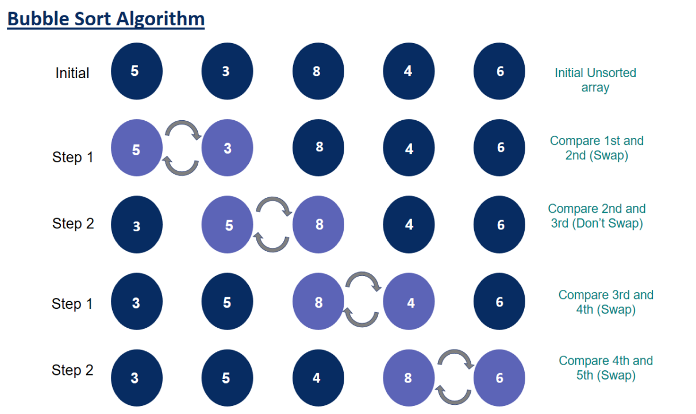

Bubble Sort Algorithm
Definition :
Bubble Sort is the simplest sorting algorithm that works by repeatedly swapping the adjacent elements if they are in the wrong order.
Steps on how it works :
- In an unsorted array of 5 elements, start with the first two elements and sort them in ascending order. (Compare the element to check which one is greater).
- Compare the second and third element to check which one is greater, and sort them in ascending order.
- Compare the third and fourth element to check which one is greater, and sort them in ascending order.
- Compare the fourth and fifth element to check which one is greater, and sort them in ascending order.
- Repeat steps 1–5 until no more swaps are required.

important Characteristics of Bubble Sort :
- Large values are always sorted first.
- It only takes one iteration to detect that a collection is already sorted.
- The best time complexity for Bubble Sort is O(n). The average and worst time complexity is O(n²).
- The space complexity for Bubble Sort is O(1), because only single additional memory space is required.